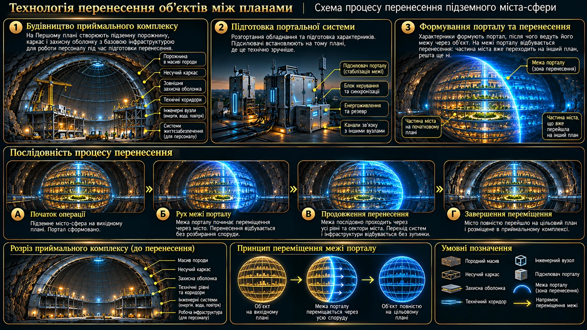

ТЕХНОЛОГІЇ · МІЖПЛАНОВЕ ПЕРЕМІЩЕННЯ
Перенесення об’єктів під землю
Технологія дає змогу переміщувати цілі міста, готові захисні модулі та великі інфраструктурні комплекси з одного Плану на інший. Об’єкт переноситься через просторовий портал у заздалегідь підготовлений підземний простір. Його внутрішня структура та призначення зберігаються.
Основний принцип
Місто не розбирають на будівлі й не переносять окремими кварталами. Характерники відкривають портал в одній початковій точці, після чого його межа поступово просувається вздовж заздалегідь визначеної траєкторії. У міру руху порталу місто переходить з одного Плану на інший. Це один безперервний процес перенесення цілого міста, а не миттєве переміщення після замикання межі.
Місто, яке переносять, уже існує на Нульовому плані як підземна споруда сферичної форми. Воно переходить на інший План разом зі своїми будівлями, внутрішніми рівнями та інфраструктурою. Приймальний комплекс на Першому плані — це не нове місто, а заздалегідь підготовлена порожнина з каркасом і захисною оболонкою, у якій розміщують готову споруду.
Підземне місто зберігає звичну міську логіку, але його внутрішній простір організований на кількох рівнях. На них розташовуються житло, сервіси, громадські приміщення, зони відпочинку, транспортні та логістичні вузли, інженерні й енергетичні системи. Рівні можуть мати різну конфігурацію та з'єднуються переходами й вертикальними комунікаціями.
Повна прихованість: підготовка порожнин, монтаж оболонок, прокладання комунікацій і всі інші роботи відбуваються під землею. Поверхня не змінюється, а противник не бачить будівельних майданчиків, техніки чи нових споруд.

Підготовка приймального простору
Перш ніж переносити місто, на приймальному Плані готують порожнину потрібного об'єму. Породу не видобувають звичайними копальними машинами. Характерники відкривають портали до заздалегідь узгоджених місць і виводять крізь них породу безпосередньо з підземної зони. Так поступово формується величезна порожнина потрібної кулястої форми. У місцях зі старими шахтними системами частину виробок можна використати повторно, розширивши або зміцнивши їх. Типові глибини таких систем — приблизно 300–600 метрів, залежно від місця та завдання.
Послідовне видалення породи
Спочатку визначають обсяг породи, який потрібно прибрати. Характерники відкривають портал під вибраною ділянкою. Ця ділянка втрачає опору знизу й під власною вагою провалюється крізь портал. Потім портал переміщують під сусідню ділянку й повторюють процес. Так поступово звільняють увесь запроєктований об'єм, формуючи кулясту порожнину.
Навколишню породу не видаляють разом із вибраною ділянкою: її залишають як масив, що утримує решту конструкції. Тому роботи ведуть послідовно, контрольованими ділянками, а не відкривають портал одночасно під усім масивом.
Пошарове видалення
Формування порожнини ведуть горизонтальними шарами, починаючи з її нижньої частини. У межах кожного шару характерники визначають окремі ділянки й послідовно відкривають портали під ними. Порода над порталом втрачає опору, відокремлюється від масиву та під власною вагою проходить крізь портал у заздалегідь узгоджене місце.
Після видалення однієї ділянки портал переміщують під наступну. Так крок за кроком звільняють увесь горизонтальний шар, а потім переходять до наступного, розташованого вище. Розмір кожної ділянки контролюють: за один цикл забирають лише ту частину породи, яку можна відокремити, не порушуючи стійкості навколишнього масиву.
Порода навколо робочої зони залишається на місці й тимчасово зберігає природну опору для решти масиву. Завдяки цьому порожнина збільшується поступово — знизу вгору та від ділянки до ділянки, — поки не набуде запроєктованої кулястої форми.
Усередині створюють несучий каркас і зовнішню захисну оболонку. Технології Нульового Плану дають змогу стабілізувати конструкцію та розрахувати її на геологічний тиск і навантаження після появи всього міста. Паралельно облаштовують тимчасові технічні коридори, інженерні вузли й системи життєзабезпечення для будівельних бригад, які готують приймальний комплекс. Ця тимчасова інфраструктура призначена для працівників і не є частиною міста, яке переноситимуть.
Портальні підсилювачі
Розмір портала, який може відкрити характерник, залежить від його особистих здібностей. Проте навіть найсильніший оператор не здатний самостійно створити портал розміром із ціле місто. Для масштабних операцій використовують портальні підсилювачі. Вони не відкривають порталів самі — їх відкривають характерники, а пристрої допомагають стабілізувати й утримувати просторову межу.
Робота одного підсилювача
Один підсилювач підтримує портал, який уже відкрив характерник. Завдяки цьому оператор витрачає значно менше сил на його утримання, а портал може залишатися відкритим тривалий час — навіть коли характерник спить. Водночас характерник, який відкрив портал, має весь цей час перебувати неподалік. Точна допустима відстань у цій технології не визначена.
Спільна робота кількох підсилювачів
Коли використовують два або більше підсилювачів, відповідна кількість характерників може відкрити окремі портали. Кожен портал стабілізується власним підсилювачем. Після цього портали можуть з'єднатися й утворити один великий портал. Його підсумковий розмір залежить не лише від кількості пристроїв, а й від конфігурації їхнього розташування та взаємного поєднання.
Підсилювачі розміщують у потрібних точках майбутньої просторової межі. Їхня конфігурація визначає, як саме можна розширювати, звужувати й утримувати портал на окремих ділянках.
Конструкція та зовнішній вигляд
Портальні підсилювачі не мають єдиного стандартного корпусу. Залежно від призначення це можуть бути масивні конструкції у формі воріт, окремі модулі на опорах, компактні пристрої або прості конусоподібні маркери, схожі на дорожні сигнальні конуси. Важливі не зовнішня форма, а функція пристрою та його місце в загальній конфігурації.
Перенесення міста: рух портальної межі
Операція починається в одній визначеній точці. Характерники відкривають там портал, а підсилювачі стабілізують його. Далі портальна межа поступово просувається вздовж підготовленої траєкторії, проходячи через місто. У міру її руху частини міста послідовно переходять з початкового Плану на приймальний. Місто при цьому не розбирають: усі його будівлі та інфраструктура залишаються єдиним об'єктом перенесення.
Рух повільний і контрольований — лише кілька метрів за кілька хвилин. Підсилювачі розташовані вздовж маршруту й послідовно приймають стабілізацію портальної межі один від одного. Перед кожним перемиканням оператори перевіряють готовність наступного вузла. Навантаження передають поступово, і попередній підсилювач від'єднують лише після підтвердження, що наступний надійно утримує портал.
Це найнебезпечніша частина операції. Якщо під час перемикання наступний підсилювач не прийме навантаження або портал втратить стабільність, вивільнення накопиченої енергії може спричинити катастрофічний вибух і знищити все навколо. Тому система постійно контролює стан вузлів, а оператори можуть зупинити просування в будь-який момент.
Якщо один із підсилювачів втрачає стабільність, рух негайно зупиняють. Сусідні вузли утримують портал, поки аварійна команда встановлює резервний підсилювач. Характерники вручну компенсують перехідне навантаження, а його передавання на резервний вузол відбувається поступово — з контрольними перевірками на кожному етапі. Продовжувати операцію можна лише після підтвердження повної стабільності.
Коли портальна межа проходить останню ділянку міста, перенесення завершується. Характерники закривають портал, а приймальна команда переходить до перевірки положення міста, захисної оболонки та інженерних систем.
Постійні переходи між віддаленими Планами
Якщо цільовий План не є сусіднім із початковим, між ними необхідно створити міжплановий тунель — послідовність порталів, що проходить через усі проміжні Плани на шляху до цілі. Такий ланцюг порталів складніше підтримувати, тому портальні підсилювачі особливо важливі для тривалого збереження його стабільності.
Для переходу між сусідніми Планами достатньо відповідного портального переходу. Якщо ж початковий і цільовий Плани розділені іншими Планами, характерники формують послідовність порталів — тунель, який з'єднує всі проміжні ланки. Підсилювачі допомагають утримувати таку складну конструкцію відкритою та стабільною.
Перевірка та введення в експлуатацію
Після прибуття перевіряють положення міста, зовнішню оболонку, цілісність споруд, інженерні вузли та комунікації. Підсилювачі поступово вимикають і демонтують після того, як система підтвердила стабільність. Далі підключають або перемикають енергопостачання, воду, вентиляцію, транспорт, зв'язок і керування.
Після завершення перенесення введення міста в експлуатацію відбувається поетапно: спочатку перевіряють критичні системи та окремі сектори, потім підключають і запускають решту інфраструктури. Це поетапне введення в роботу не означає, що місто розбирають або переносять частинами: портальна межа проходить крізь наявну підземну сферу, і все місто переходить на інший План як єдиний об'єкт.
Захисні модулі та бомбосховища
Захисні модулі виготовляли на Нульовому Плані заздалегідь. Це готові комплекси з автономними системами, розраховані приблизно на місяць перебування людей у важких умовах. Після війни їх законсервували та зберігали до потреби.
Перед перенесенням фахівці перевіряють обладнання, поповнюють запаси свіжих продуктів і підключають модуль до локальної системи керування. У підземному просторі готують приймальну порожнину, після чого характерник переносить готовий модуль порталом безпосередньо всередину. Інженери завершують доступи, підключають комунікації, перевіряють системи та вводять сховище в експлуатацію.
Якщо місце готове, саме перенесення займає лічені хвилини. Основний час припадає на підготовку порожнини, підключення та перевірки. Додатковий шар породи над модулем підвищує захист, але сам модуль уже має власну міцну оболонку.
Вузлові сховища та підземна мережа
Окремі сховища мають обмежену місткість і спочатку не з'єднані між собою. Щоб люди могли перейти з пошкодженого або небезпечного сховища до іншого, потрібні підземні переходи та більші вузлові комплекси.
Вузлові сховища — це більші готові модулі з розширеними можливостями. Їх можна пристосувати під медичні центри, палати, діагностичні й операційні приміщення, склади та довготривале перебування. Звичайні сховища з'єднують із вузлами підземними коридорами та комунікаціями. Так люди можуть переміщуватися між ними, отримувати допомогу й евакуюватися, не виходячи на поверхню.
Така система вже використовується військовими вздовж усієї лінії фронту: менші укриття сполучені підземними переходами з більшими вузловими комплексами. Цей досвід стає основою для розбудови цивільної мережі.
Масштаб операцій
Перенесення великого міста потребує одночасної роботи кількох спеціалізованих груп. Орієнтовно залучають близько 200 операторів порталів, приблизно 2 000 інженерів і монтажників та кілька сотень науковців. Конкретний склад залежить від розміру об'єкта, складності оболонки й етапу операції.
Для підготовчих робіт на старих шахтних системах може вистачити близько 120 характерників. Під час основного етапу перенесення великого міста кількість операторів зростає приблизно до 200–300.
Головне обмеження технології
Портал дає змогу перемістити об'єкт, але не скасовує потреби підготувати місце його приймання. Порожнина, оболонка, комунікації, резервування та система контролю мають бути готові заздалегідь. Чим більший об'єкт, тим складніша підготовка й повільніше саме перенесення.
Уся інфраструктурна робота залишається під землею. Для противника поверхня виглядає незмінною — без видимих будівельних робіт і нових споруд.